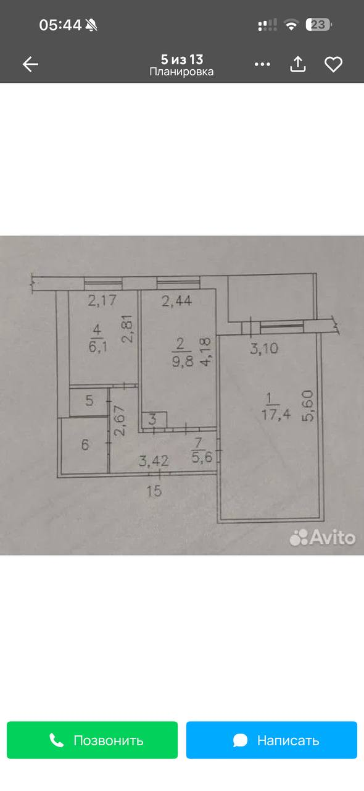

Гостиная в центре
Перегородку у входа убираем по вашему условию. Диван 180 см смотрит на ТВ; у окна — стол 120 см. Поднос на подлокотнике сохраняет место для ног и проход. Хозяйственный блок № 3 с исходного плана пока сохраняем.
Спальня справа. Гостиная в центре. Всё на своём месте.

Нажмите на мебель, чтобы увидеть её размеры и назначение.
Существующие стеныНовая перегородкаУбираем у входа в гостиную
ЛОГИКА ПЛАНИРОВКИ
Перегородку у входа убираем по вашему условию. Диван 180 см смотрит на ТВ; у окна — стол 120 см. Поднос на подлокотнике сохраняет место для ног и проход. Хозяйственный блок № 3 с исходного плана пока сохраняем.
Изголовье кровати обращено к правой стене. Есть подходы с обеих сторон и около 95 см у изножья. Гардеробная занимает дальнюю часть комнаты: окно и выход на балкон остаются в спальне. Балкон сохраняем отдельным.
В гардеробной — 270 см открытых секций глубиной 60 см. Плечики, полки, бельё; зеркало на стене. Дверь сдвигается вдоль перегородки со стороны спальни. В прихожей остаются только повседневные куртки, обувь и место для переобувания.
Кухня без двери, гарнитур слева: мойка рядом с мокрой зоной, 60 см подготовки между мойкой и плитой, ПММ 45 см. Справа — небольшой стол. В душевой предварительно помещаются душ 80 × 80 и компактная машина под специальной раковиной.
Светлые стены, древесная текстура, льняной текстиль и приглушённая олива. Высокое хранение собрано в гардеробной.
С фото читаются: кухня 2,17 × 2,81 м, центральная комната 2,44 × 4,18 м и правая 3,10 × 5,60 м. Подписи площадей сохранены с фото и могут отличаться от произведения размеров. Высота потолка в модели — 2,60 м.
Размеры санузлов, толщина стен, точные места проёмов, радиаторы, стояки и глубина балкона на фото полностью не определяются. Расстановка сантехники — предварительная. Элемент № 3 сохранён до выяснения его назначения. Тип плиты пока не указан; кухня показана с открытым входом по вашему уточнению.
Убираемую перегородку отмечаем по вашему условию; перед работами проверяются её конструкция и коммуникации. Гардеробной нужен воздухообмен. После обмера проверяются выбранные изделия, крепления, открывание окон и доставка мебели.
Проверены пересечения предметов и стен, движение дверей, парковка полотна гардеробной, подходы к кровати и маршруты с условным телом шириной 60 см. Это проверка эскиза, а не подтверждение строительных норм.
В узкой кухне открытая техника временно занимает проход. Входы в санузлы компактные: двери открываются по очереди; открытая дверь туалета перекрывает подход к кухне. Цветные зоны показывают отдельные действия. В туалете не втиснут дополнительный рукомойник — раковина в соседней душевой.
Для кухни использован принцип рабочей поверхности между мойкой и плитой из руководства IKEA. Модель не является спецификацией этого производителя.